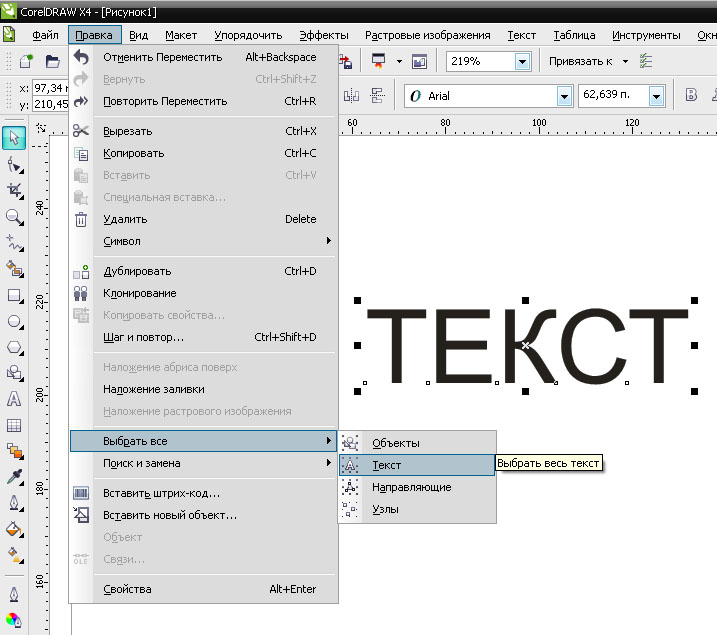

ВОПРОС / ОТВЕТ ДЛЯ НАЧИНАЮЩИХ
polzovatel-902 / 13.07.2010, 09:21/00:41
Форум:
Объясню на примере, чтоб было понятней... Открываю в кореле картинку (футболку с надписью) в формате JPG, мне нужно вытянуть из футболки надпись, т.е разъеденить файл... Говорят нужно формат изменить, еще что-то... Объясните, пожалуйста, что нужно сделать для этого...? Заранее спасибо.
Привет всем. Есть ли какой-нибудь простой макрос или кусок кода, который скривил бы весь текст на всех листах в файле для Corel X5?
в CDR Tools (здесь в макросах) такое было - правда в описании я такой функции не нашел - в том варианте что у меня стоит - есть
Не нашел такого. Более менее сам справился)
Теперь другие вопросы есть) Сделал для себя небольшой макрос, который расставляет направляющие, с выводом userform и т.п. Все это сделалось в GlobalMacros, как все это засунуть в свой gms файл? Если засовываю то пишет: Can't find project or library. А второй вопрос возник в процессе: я так понял все значения в vba записываются в дюймах? Как подружить с милимметрами?
kuman, используйте F2 и F1 в VBA редакторе.
П.С.
Да, в 4-х страницах раздела Макросы и скрипты наверное очень трудно найти заголовок Макрос CdrTools :)
Да нее, его-то я нашел :) Только перевод в кривые там вроде не было. Пришлось самому маленький макрос сделать, только так и не смог его заставить весь документ закривить, пришлось постранично.
kuman, не так уж много времени занимает кривить по-странично.
Поэксперементировал, где-то 2-3 с/стр.

Ctrl + Q
За-то будешь уверен, что всё прошло под контролем.
P.S. Единственное текст в группах не выбирается.
sergey, мало того что в группах не выбирается, так ещё и а контейнерах :D
И что это за "За-то будешь уверен, что всё прошло под контролем."?
Я вот например больше за макросы уверен.
Откуда вообще эта боязнь/недоверие к макросам и подобным штуковинам?
Конечно можно и постранично, вручную. Но у меня было 200 страниц, а это уже не 5 минут :) Оффтоп уже пошел по-моему)
kuman, так купи CdrPreflight
Sancho, я всю жизнь проработал в конторах, у которых денег не то что на макросы, а.......
К макросам претензий нет, я с ними не знаком. Всё вручную. Отсюда боязнь — незнание.
Страницы